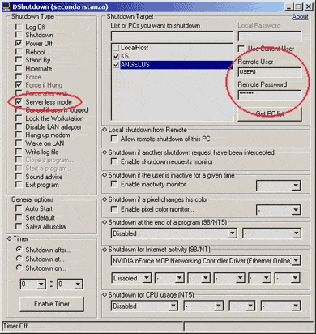
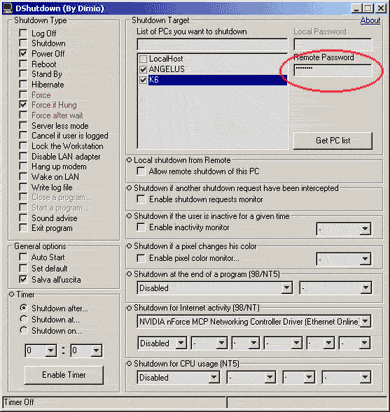

HOW TO SHUTDOWN REMOTE PCs
MODE 1
|
1. On local PC start
'DShutdown.exe'. 2. Select 'Server less mode' option 3. Set 'Remote User' and 'Remote Password' of a remote user that own shutdown privileges on remote PC you want shutdown. |
 |
MODE 2
|
1. Install 'RDShutdown.exe' on remote PC (you can use
'RDShutdown
Setup Utility.exe' to set a password). 2. On local PC start 'DShutdown.exe' (if you have set a password you must put it on 'Remote Password' box). |
 |